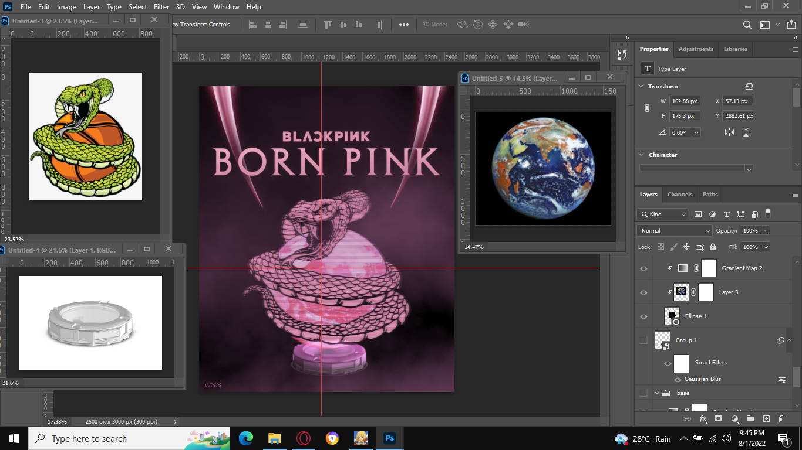
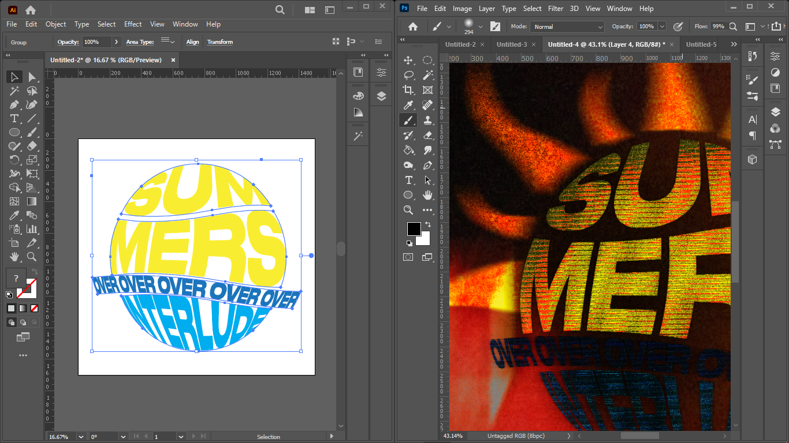

Proficiencies, Software Programs, and Skills
Certifications
IT Specialist - Python
Earners of this badge demonstrate that they can recognize, write, and debug Python code that will logically solve a problem.
AWS Academy Graduate - AWS Academy Cloud Foundations
Earners of this badge have taken the AWS Academy Cloud Foundations course.
CCNA: Introduction to Networks
Cisco verifies the earner of this badge successfully completed the Introduction to Networks course and achieved this student level credential. Earner has knowledge of networking including IP addressing, how physical, data link protocols support Ethernet, can configure connectivity between switches, routers and end devices to provide access to local and remote resources. Earner participated in up to 54 labs and accumulated up to 14 hours of hands-on labs using Cisco hardware or Packet Tracer tool.
NDG Linux Essentials
OBTAINING THE LINUX ESSENTIALS PROFESSIONALDEVELOPMENT CERTIFICATE SHOWS THAT YOU:Understand the Linux operating system, Have demonstrated the ability to navigate a Linux system, Can execute the power of the Linux command line, Possess knowledge of Linux security and file permissions, Have the motivation to advance your IT career
CCNA: Switching, Routing, and Wireless Essentials
Cisco verifies the earner of this badge successfully completed the Switching, Routing, and Wireless Essentials course and achieved this student level credential. The earner has a foundation in switching operations, wired and wireless LAN configuration using security best practices, redundancy protocols, and developed problem-solving skills. Earner participated in up to 45 practice activities and accumulated up to 21 hours of hands-on labs using Cisco hardware and/or the Cisco Packet Tracer tool.
CCNA: Enterprise Networking, Security, and Automation
Cisco verifies the earner of this badge successfully completed the Enterprise Networking, Security and Automation course and achieved this student level credential. The earner has a foundation in scalable network architectures, dynamic routing, mitigation of security threats, wide-area networks, virtualization, automation of programmable networks. Earner participated in up to 41 lab activities and accumulated up to 15 hours of hands-on labs using Cisco hardware and/or Cisco Packet Tracer tool.
Introduction to Cybersecurity
Cisco verifies the earner of this badge successfully completed the Introduction to Cybersecurity course. The holder of this student-level credential has introductory knowledge of cybersecurity, including the global implications of cyber threats on industries, and why cybersecurity is a growing profession. They understand vulnerabilities and threat detection and defense. They also have insight into opportunities available with pursuing cybersecurity certifications.
Cybersecurity Essentials
Cisco verifies the earner of this badge successfully completed the Cybersecurity Essentials course. The holder of this student-level credential has foundational knowledge of cybersecurity, including the basics of network security, encryption and cybersecurity laws. The holder has been introduced to tactics and techniques used by Black Hats, and the principles of Confidentiality, Integrity, and Availability used by White Hats to defend networks.


Adobe Photoshop and Illustrator
Graphic Design using Adobe Photoshop And Illustrator
Programming Languages and Software Proficiencies
·Adobe Photoshop & Illustrator ·Adobe Premiere ·Microsoft Office ·Linux ·Quartus ·SQL ·C# ·C++ ·Python